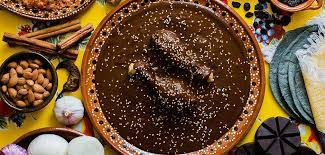

Chicken mole recipe
By
Jenny Wells

Ingredients
- 1 tablespoon vegetable oil
- 1 (3 pound) chicken, cut into pieces
- 1 bay leaf
- ¼ teaspoon black pepper
- ⅛ teaspoon cayenne pepper
- ½ teaspoon paprika
- ½ teaspoon ground cloves
- ½ teaspoon ground cinnamon
- 1 onion, chopped
- 2 cloves garlic, minced
- 1 (14.5 ounce) can diced tomatoes
- 2 teaspoons brown sugar
- 1 cup chicken broth
- ¼ cup semisweet chocolate chips
- ¼ cup raisins
- 2 tablespoons sesame seeds
Steps
- Bring a large pot of lightly salted water to a boil. Add pasta and cook for 8 to 10 minutes or until al dente; drain.
- Preheat oven to 350 degrees F (175 degrees C). In a large skillet over medium-high heat, brown beef and season with salt and pepper; drain. Stir in spaghetti sauce and garlic and simmer 5 minutes.
- In a medium bowl, combine mozzarella, Cheddar and ricotta; stir well. In 9x13 inch pan, alternate layers of noodles, meat mixture and cheese mixture until pan is filled.
- Bake in preheated oven for 30 minutes, or until cheese is melted and bubbly.
Home